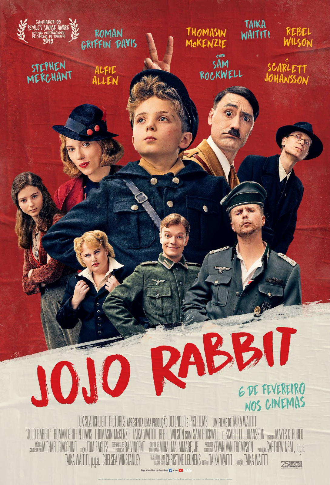

Top 5 filmes de 2020
Filme 1: 1917

O enredo é relativamente simples: dois soldados ingleses precisam levar um recado para evitar que uma tropa aliada caia numa armadilha mortal. Milhares de vidas estão nas suas mãos. Para quem é fã de filmes de guerra, este longa, narrado quase em tempo real e com cenas de tirar o fôlego, é absolutamente imperdível! Foram nada menos que 10 indicações ao Oscar, incluindo melhor filme.
Filme 2: Jojo Rabbit

Lançado no final de 2019, esta sátira ambientada num dos períodos mais tristes da história aposta no humor para criticar a intolerância, tal como fez Charlie Chaplin no início do século XX. O filme conta a história de um menino alemão da Juventude Hitlerista que descobre uma garota judia escondida em sua casa. O filme teve 6 indicações ao Oscar.
Filme 3: O Poço
Um filme de terror e suspense que se tornou viral logo nos primeiros dias em que foi lançado. Há quem diga que esse filme lembra um pouco a proposta do Parasita, vencedor do Óscar de Melhor Filme 2020. Nessa história, prisioneiros estão numa prisão vertical, em que a comida chega conforme as plataformas. Assim, quem está mais para o fim da prisão, fica só com os restos de comida das plataformas de cima.
Filme 4: Viver Duas Vezes

Uma linda e emocionante história de amor, em que Emilio (Oscar Martínez), diagnosticado com Alzheimer, resolve partir para uma grande aventura e reencontrar um amor de infância, antes que seja tarde para lembrar do rosto dela. Um filme espanhol, original Netflix, que promete muitas lágrimas.